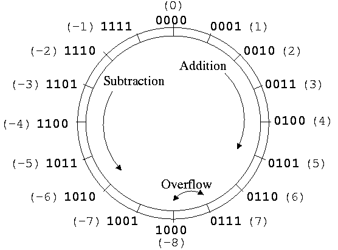
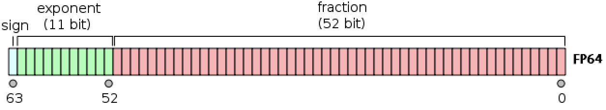
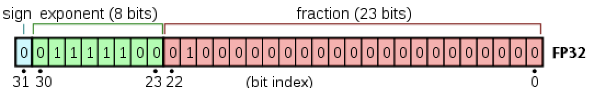
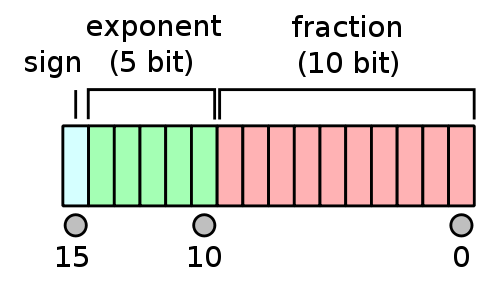
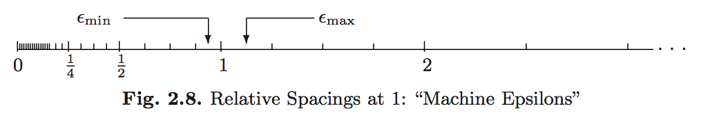

Computer Arithmetic
Goals
- Develop an understanding of how numbers are represented on a computer.
- Gain an awareness of the failure modes of computer number systems.
Integers: Fixed-Point System
- Fixed-point number system is a computer model for integers \(\mathbb{Z}\).
- The number of bits and method of representing negative numbers vary from system to system.
- NumPy has several integer types:
np.int8,np.int16,np.int32,np.int64and their unsignednp.uintXrelatives.
Signed Integers
- First bit indicates sign.
0for nonnegative numbers1for negative numbers
- Two’s complement representation for negative numbers.
- Sign bit is set to
1. - Remaining bits are set to opposite values
1is added to the result- Two’s complement representation of a negative integer
xis same as the unsigned integer2^64 + x.
- Sign bit is set to
Two’s complement representation respects modular arithmetic. Adding any two signed integers is just bitwise addition, possibly module \(2^{M}\).

Arithmetic (addition, subtraction, multiplication) on integers is exact except for the possibility of overflow.
The range of representable integers by an \(M\)-bit signed integer is \([-2^{M-1}, 2^{M-1}-1]\).
Unsigned Integers
Unsigned integers use all \(M\) bits to represent non-negative integers. Their range is \([0, 2^{M}-1]\).
Overflow Behavior
What happens when an arithmetic operation results in a value outside the representable range? This is known as overflow behavior and it varies across programming languages.
/tmp/ipykernel_4719/3463402941.py:1: RuntimeWarning: overflow encountered in scalar add
x = np.iinfo(np.int64).max + np.int64(1)np.int64(-9223372036854775808)This example shows that NumPy’s intX types will wrap around from one extreme of the representable range to the other.
Real Numbers: Floating-Point System
The floating-point number system is a computer model for real numbers \(\mathbb{R}\).
Most computer systems adopt the IEEE 754 standard, established in 1985, for floating-point arithmetics.
- For the history, see an interview with William Kahan.
- His personal website records his advocacy for better computing and education about computing throughout time.
In the scientific notation, a real number is represented as
\[ \pm d_{0} . d_{1} d_{2} \cdots d_{p} \times b^{e}. \]
On a computer, the base is \(b = 2\) and the digits \(d_{i}\) are one of \(0\) or \(1\).
A normalized floating-point number has \(d_{0} \neq 0\). For example, \(+1.0010 \times 2^{4}\).
A denormalized numbers has \(d_{0} = 0\). For example, \(0.1001 \times 2^{5}\) (equivalent).
Under this system, a computer must keep track of
- The sign bit.
- The fraction (or mantissa, significand) of the normalized representation.
- The actual exponent \(e\) plus a bias.
As with integers, there are several floating point types.
Double Precision Float64

Double precision (64 bits = 8 bytes) numbers are the dominant data type in scientific computing.
- Bit on the left is the sign bit.
- \(p = 52\) significant bits.
- 11 bits for the exponent \(e\). This means \(e_{\mathrm{min}} = -1022\) and \(e_{\mathrm{max}} = 1023\). The bias is \(1023\).
- Note that \(e_{\mathrm{min}} - 1\) and \(e_{\mathrm{max}} + 1\) are reserved for special numbers.
- Range for magnitude: \(10^{\pm 308}\) in decimal notation because \(\log_{10}(2^{1023}) \approx 308\).
- Double precision numbers are precise up to about the \(-\log_{10}(2^{-52}) \approx 15\) decimal point.
finfo(resolution=1e-15, min=-1.7976931348623157e+308, max=1.7976931348623157e+308, dtype=float64)Single Precision Float32

- \(p = 23\) significant bits.
- \(8\) exponent bits: \(e_{\mathrm{min}} = -126\) and \(e_{\mathrm{max}} = 127\). Bias is 127.
- Also reserves numbers at the extreme ends.
- Range for magnitude: \(10^{\pm 38}\) in decimal notation because \(\log_{10}(2^{127}) \approx 38\).
- Precise up to about the \(-\log_{10}(2^{-23}) \approx 7\) decimal point.
Half-Precision Float16

- \(p = 10\) significant bits.
- \(5\) exponent bits: \(e_{\mathrm{min}} = -14\) and \(e_{\mathrm{max}} = 15\). Bias is 15.
- Also reserves numbers at the extreme ends.
- Range for magnitude: \(10^{\pm 4}\) in decimal notation because \(\log_{10}(2^{15}) \approx 4\).
- Precise up to about the \(-\log_{10}(2^{-10}) \approx 3\) decimal point.
Special Floating-Point Numbers
Infinity: +Inf and -Inf
Exponent \(e_{\mathrm{max}} + 1\) (exponent bits all 1) with a zero mantissa means \(\pm \infty\)
Not a Number: NaN
Exponent \(e_{\mathrm{max}} + 1\) (exponent bits all 1) with a nonzero mantissa means nan. nan could be produced from 0 / 0, 0 * Inf, \(\ldots\)
- Note that
nan\(\neq\)nan. - In fact,
x == nanis alwaysfalse. - Use
np.isnan()to check for “not a number”.
Zero 0
Exponent \(e_{\mathrm{min}} - 1\) (exponent bits all 1) with a zero mantissa represents the real numbrer \(0\).
There are some special rules in IEEE 754 for signed zeros. Exponent \(e_{\mathrm{min}} - 1\) (exponent bits all 1) with a nonzero mantissa represents numbers less than \(b^{e_{\mathrm{min}}}\). Thus, numbers are denormalized in the range \((0, b^{e_{\mathrm{min}}})\). This is graceful underflow.
Rounding
Rounding is necessary whenever a number has more than \(p\) significand bits. Most computer systems use the default IEEE 754 round to nearest mode (also called ties to even mode). For example, the number 0.1 in decimal system cannot be represented accurately as a floating point number: \[ 0.1 = 1.\underbrace{1001}_\text{repeat}\underbrace{1001}... \times 2^{-4} \]
For a number with mantissa ending with …001(100…, all 0 digits after), it’s a tie and will be rounded to …010 to make the mantissa even.
Overflow and Underflow Behavior
For double precision, the range is \(\pm 10^{\pm 308}\). In most situations, underflow (magnitude of result \(<\) \(10^{-308}\)) is preferred over overflow (magnitude of result \(>\) \(10^{308}\)) because the latter produces \(\pm \infty\). On the other hand, underflow yields zeros or denormalized numbers.
Example: Logit link
The logit link function is
\[ p(x) = \frac{\exp (x^T \beta)}{1 + \exp (x^T \beta)} = \frac{1}{1+\exp(- x^T \beta)}. \]
It is commonly used in logistic regression, binary classification, and is generalized by the softmax function (ubiquitous in machine learning). The former expression can easily lead to Inf / Inf = NaN, while the latter expression leads to graceful underflow.
Machine epsilons
These are the spacings of numbers around 1 (depending on floating-point precision): \[ \epsilon_{\min}=b^{-p}, \quad \epsilon_{\max} = b^{1-p}. \]

What goes wrong?
Scenario 1: Roundoff Error
Addition or subtraction of two numbers of widely different magnitudes: \(a+b\) or \(a-b\) where \(a \gg b\) or \(a \ll b\). We lose the precision in the number of smaller magnitude.
Consider
\[ \begin{eqnarray*} a &=& x.xxx ... \times 2^{30} \\ b &=& y.yyy... \times 2^{-30} \end{eqnarray*} \]
What happens when computer calculates \(a+b\)? We get \(a+b=a\)!
Scenario 2: Catastrophic Cancellation
Subtraction of two nearly equal numbers eliminates significant digits. \(a-b\) where \(a \approx b\). Consider
\[ \begin{eqnarray*} a &=& x.xxxxxxxxxx1ssss \\ b &=& x.xxxxxxxxxx0tttt \end{eqnarray*} \]
The result is \(1.vvvvu...u\) where \(u\) are unassigned digits. Rember that this is a binary representation, not a decimal number!
This error, while small in absolute terms, represents a large loss of precision.
Implications for Computing
- Rule 1: Add small numbers together before adding larger ones.
- Rule 2: Add numbers of like magnitude together (paring). When all numbers are of same sign and similar magnitude, add in pairs so at each stage the summands are of similar magnitude.
- Rule 3: Avoid subtraction of two numbers that are nearly equal.